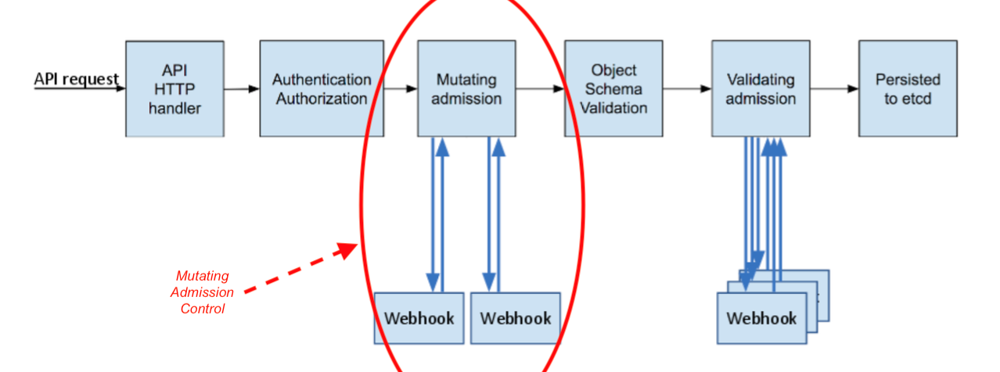

KT-env源码解读
了解了 KT-env 的基本功能、原理和使用之后，我们最后再来了解一下 KT-env 相关的源码实现。
KT-env 的源码仓库地址: virtual-environment
其中，我们先来了解一下它们的目录结构和功能：
- cmd: 二进制程序的入口文件 - 核心目录。
- pkg: 相关功能模块的封装模块 - 核心目录。
- version: 版本信息。
- build: 编译脚本。
- deploy: 部署脚本。
- docs: 文档。
- examples: 示例相关代码。
- sdk: 透传 headers 相关的SDK。
其中，核心的源码目录是 cmd 和 pkg 两个目录。
查看 cmd 目录下的内容，可以很容易的看出，它一共涉及到三个二进制可执行程序，分别是 operator，inspector 和 webhook。
其中，inspector 的功能非常简单，就是一个 HTTP 客户端，可以调用 operator 的接口查询 operator 模块的版本信息、状态以及修改日志级别，不再赘述。
我们重点来分析 operator 和 webhook 两个程序的功能。
operator
webhook
在 KT-env 中包含了一个全局的Mutating Admission Webhook组件， 它的主要作用是将Pod上的环境标信息通过环境变量注入到Sidecar容器里，便于Sidecar为出口流量的Header添加恰当的环境标。
那么什么是 Mutating Admission Webhook 呢？这是 K8s 中的一个特有的概念，我们先来了解一下。
Admission webhook 是一种用于接收准入请求并对其进行处理的 HTTP 回调机制。 K8s 中可以定义两种类型的 admission webhook，即 validating admission webhook 和 mutating admission webhook。 其中，Mutating admission webhook 会先被调用。 它们可以更改发送到 API 服务器的对象以执行自定义的设置默认值操作。
K8s的具体的处理流程如下图所示：

而 Kt-env 中的 Webhook 其实就是这么一个组件，它主要用于将Pod上的环境标信息通过环境变量注入到Sidecar容器里， 即在 Webhook 阶段，修改了 Sidecar 的配置，向其中设置了对应的环境变量。
了解了 webhook 的原理之后，我们就来看一下 KT-env 中的 webhook 是如何实现的吧。
首先，我们先来简单看一下 Webhook 对应的 yaml 配置文件：
apiVersion: admissionregistration.k8s.io/v1beta1
kind: MutatingWebhookConfiguration
metadata:
name: virtual-environment-webhook
webhooks:
- name: webhook-server.kt-virtual-environment.svc
failurePolicy: Fail
clientConfig:
service:
name: webhook-server
namespace: kt-virtual-environment
path: "/inject"
caBundle: LS0tLS1CRUdJTiBDRVJUSUZJQ0FURS0tLS0tCk1JSURYVENDQWtXZ0F3SUJBZ0lVZG42TEl2bDNaV2ltbndEVGwxS3U3ODhKcDBrd0RRWUpLb1pJaHZjTkFRRUwKQlFBd1BqRThNRG9HQTFVRUF3d3pWbWx5ZEhWaGJDQkZiblpwY205dWJXVnVkQ0JCWkcxcGMzTnBiMjRnUTI5dQpkSEp2Ykd4bGNpQlhaV0pvYjI5cklFTkJNQjRYRFRJd01EZ3lOVEUxTURrMU5Wb1hEVE13TURneU16RTFNRGsxCk5Wb3dQakU4TURvR0ExVUVBd3d6Vm1seWRIVmhiQ0JGYm5acGNtOXViV1Z1ZENCQlpHMXBjM05wYjI0Z1EyOXUKZEhKdmJHeGxjaUJYWldKb2IyOXJJRU5CTUlJQklqQU5CZ2txaGtpRzl3MEJBUUVGQUFPQ0FROEFNSUlCQ2dLQwpBUUVBeDYrQkZIaXlkZk9uR3FMRmt4Y2lpL21ZMG9XU3dRV2krTHYwdmNqeklQTndKa2c0V0FJYTRWK0RqdTV2CmZ5NlE2RFhUaitlRnhlK212MmtVSEFtYjNsWS9iT3RaWGp2VnQ4bnBHS1VLdlBBN0hVRFdhUkZKOTR1eUJpQm8KQnlXTnZtTGNka0VFTjRVMVVGTlVIV3B1L1lHNXNaSC9ZQWZjZGEyMDhIUzVkQmllNTNYMmJjdjQrNGhzS3oyOAp0UUR2MmR3ZkxFT2crZ2lVUWRWRHUrN0lXUXpjRkp4NmdpdlBpVkl1UVRHVk04K0tya2dITlhXVjU4OGIwcTU1CnNPNjR2YWQ4cW5XT0t5bk5oSThyZzN0dGVJVkFHdkEvUnJGczFocytERHVBZlMxamhiRWUyUEJHSHVMeGx6TGIKNjR2NUV5VEhEdDVVOS93bFpxS0hMWlZQeFFJREFRQUJvMU13VVRBZEJnTlZIUTRFRmdRVVg1cEI4dkYzbnducQpUUjA1TlVhVlhaQzd4VjB3SHdZRFZSMGpCQmd3Rm9BVVg1cEI4dkYzbnducVRSMDVOVWFWWFpDN3hWMHdEd1lEClZSMFRBUUgvQkFVd0F3RUIvekFOQmdrcWhraUc5dzBCQVFzRkFBT0NBUUVBbFU0YkxNMGlzbm5KaDA1dCs3TDkKWkFtS2M1eXhGdkUremlsK2Y5aEUzdzJpYjI0bVNYTVpOSWEvUWd6akxGK0owQVlIbUxXZTRQa2I4eXliQnVjRQp6d2VRNEc5Y3U2QWV5VFRHTk9zbU5lREx4WGRVOUJ1aElvRmZsR2ZDV1pudHA5ajZsbnFJbndqdjZJWDBEQmc1CkFEbXRNdVVrS0gyMXdUTHhXNVBWSmhQWnZiL3p1ZGNlNUxWRG1zT0Z5cjFkK2lnVnZPVzJJam51QUw3eGpXWFQKenVGYng5NnZBYTJjS0hWRjYyVzdoekp6NURiN0cwdWxJMXptOTF0ZXJaZjRYSHlUT3FzUC8wczFsYjV1V1k5cAo2NUZiZCtHMXJOL2NBcUM4NXo0K1Rrc2QrdTV1ZDFVREc5MEsvRG9UdS9vcis3U3o2bWNWdjVBejlLSHVxRzE2CnlBPT0KLS0tLS1FTkQgQ0VSVElGSUNBVEUtLS0tLQo=
rules:
- operations: ["CREATE"]
apiGroups: [""]
apiVersions: ["v1"]
resources: ["pods"]
namespaceSelector:
matchLabels:
environment-tag-injection: enabled
上述配置文件表示针对:
- 设置了
environment-tag-injection: enabled的 namespace 下 - Pod 资源对象在创建时
- 会触发 Mutating Admission Webhook 调用
- 调用的请求地址是 webhook-server.kt-virtual-environment.svc/inject
而具体的注入环境变量的逻辑则在 webhook-server 模块内，
其核心代码见 main.go 。
我们选择其中部分的核心代码进行说明：
envLabels := os.Getenv("envLabel")
if envLabels == "" {
logger.Fatal("Cannot determine env label !!")
}
envLabelList := strings.Split(envLabels, ",")
envTag := ""
for _, label := range envLabelList {
if value, ok := pod.Labels[label]; ok {
envTag = value
break
}
}
从环境变量中读取 envLabel 的配置，并判断 Pod 上是否存在其中的某个 label，如果存在，则表示使用该 label 对应的 value 用于 headers 追加。
var patches []PatchOperation
if envVarIndex < 0 {
patches = append(patches, PatchOperation{
Op: "add",
Path: fmt.Sprintf("/spec/containers/%d/env/0", sidecarContainerIndex),
Value: corev1.EnvVar{Name: envVarName, Value: envTag},
})
} else {
patches = append(patches, PatchOperation{
Op: "replace",
Path: fmt.Sprintf("/spec/containers/%d/env/%d/value", sidecarContainerIndex, envVarIndex),
Value: envTag,
})
}
表示根据之前的计算规则，生成 patch 操作，用于向 Pod 中追加/修改对应的环境变量，
其中，key 为 VIRTUAL_ENVIRONMENT_TAG，取值为之前步骤中从 Pod 上获取到的 label 对应的值。
通过上述步骤，就完成了将业务 Pod 上中指定的 Label 对应的值设置到 Sidecar 容器中的环境变量中了。
那么，Sidecar 中的环境变量是如何追加到发送请求的 header 中的呢？
这个其实是用到了 Istio 中的功能 EnvoyFilter。
如上文所示，在 operator 模块中，会创建 EnvoyFilter，在 EnvoyFilter 中，通过 lua 脚本，在出流量的阶段中，追加了 headers 信息。
示例 EnvoyFilter 配置如下:
kind: EnvoyFilter
apiVersion: networking.istio.io/v1alpha3
metadata:
name: demo-virtualenv
namespace: kt-env1
labels:
envHeader: ali-env-mark
envLabel: virtual-env
spec:
workloadSelector: ~
configPatches:
- applyTo: HTTP_FILTER
match:
context: SIDECAR_OUTBOUND
listener:
filterChain:
filter:
name: envoy.http_connection_manager
patch:
operation: INSERT_BEFORE
value:
name: virtual.environment.lua
typed_config:
'@type': type.googleapis.com/envoy.config.filter.http.lua.v2.Lua
inline_code: |-
local curEnv = os.getenv("VIRTUAL_ENVIRONMENT_TAG")
function envoy_on_request(req)
local env = req:headers():get("ali-env-mark")
if env == nil and curEnv ~= nil then
req:headers():add("ali-env-mark", curEnv)
end
end
其中，我们可以重点关注最下方的 lua 脚本，可以看出其基本的逻辑如下：
判断请求头部中是否包含 ali-env-mark，如果没有包含，
则从环境变量中取出 VIRTUAL_ENVIRONMENT_TAG 的值并设置为 ali-env-mark headers 的值。